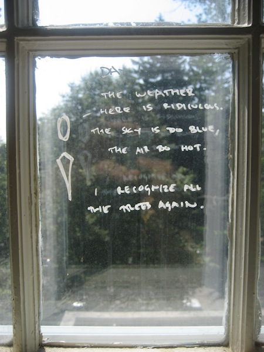
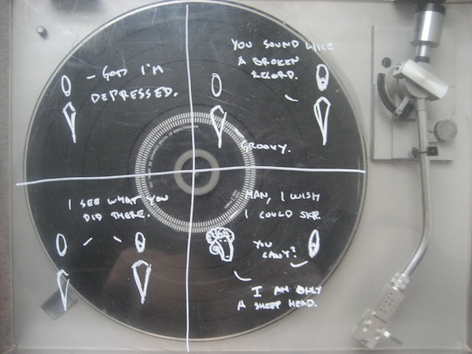
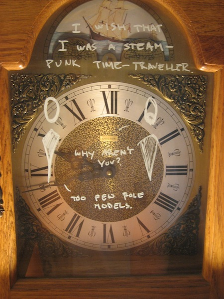
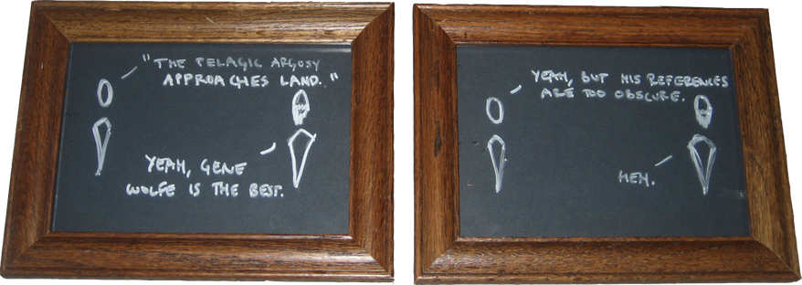
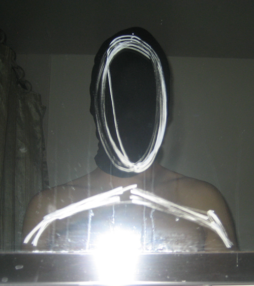
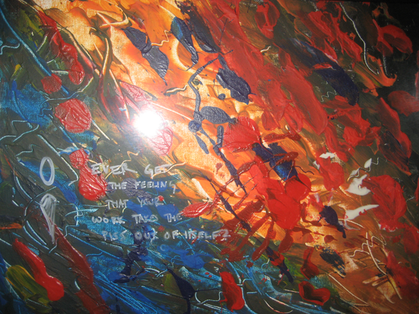

American Window Sessions
July 17th, 2010
July 18th, 2010

July 19th, 2010

July 20th, 2010

July 21st, 2010

Cyclops: Ah, the wide sea...
Man: Sometimes I wonder if the mirror-worlds are the same. If each island of sight shows a different universe.
The intervening sea too wide for any ship...
Cyclops: I'm so alone. & happy.
July 22nd, 2010

July 23rd, 2010

July 24th, 2010

July 25th, 2010

Man: Ever get the feeling that your work takes the piss out of itself?
July 26th, 2010

July 29th, 2010

July 30th, 2010

-----
...These are the window sessions...
© 2010 Richard L.